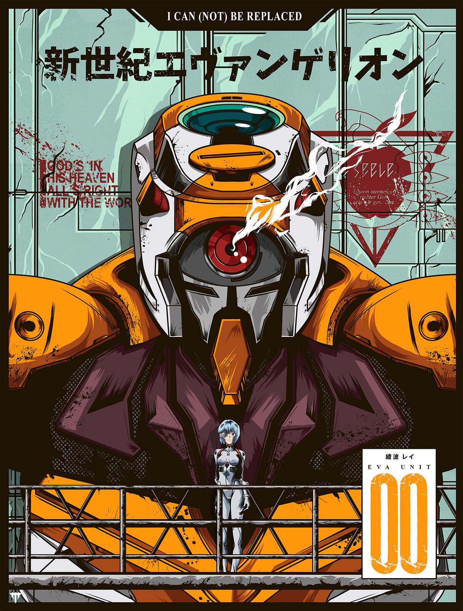

TITULO da POSTAGEM 1
postado em 29 de janeiro de 2021 Carmilla é uma novela de ficção gótica do escritor irlandês Joseph Sheridan Le Fanu. É narrada por Laura, uma jovem estiriana que conta os dias passados na companhia da misteriosa Carmilla e os eventos estranhos que ocorreram na região após a sua chegada. Um clássico da literatura britânica, Carmilla apresenta a primeira vampira feminina da literatura, criou o tropo de vampira lésbica, inspirou diretamente Dracula (1897) e marcou a literatura gótica. A novela foi adaptada inúmeras vezes para o cinema, teatro e outras mídias.
Leia maisTITULO da POSTAGEM 2
postado em 29 de janeiro de 2021
Quando Laura tem 19 anos, ela está esperando ansiosamente a visita do velho amigo do seu pai, General Spielsdorf, porque ele deve trazer consigo sua sobrinha, Bertha Rheinfeldt, e Laura que vive solitária, espera que ela e Bertha se tornem amigas. Porém, seu pai recebe uma carta de Spielsdorf afirmando que sua sobrinha morreu. Ele diz na carta que um "monstro", que traiu sua "cega hospitalidade" é o culpado de tudo, e diz que vai dedicar seus dias à caça ao monstro, e depois de dois meses, iria visitar o pai de Laura. Ambos, pai e filha, ficam chocados com a carta do general, e Laura fica particularmente frustrada por ter pedido uma amiga em potencial.
Leia maisPostagens recentes
The Curse of Styria (2014) é uma adaptação situada nos anos de 1980, com Julia Pietrucha como Carmilla e Eleanor Tomlinson como Lara.
Leia maisThe Curse of Styria (2014) é uma adaptação situada nos anos de 1980, com Julia Pietrucha como Carmilla e Eleanor Tomlinson como Lara.
Leia maisTodos os direitos reservados.